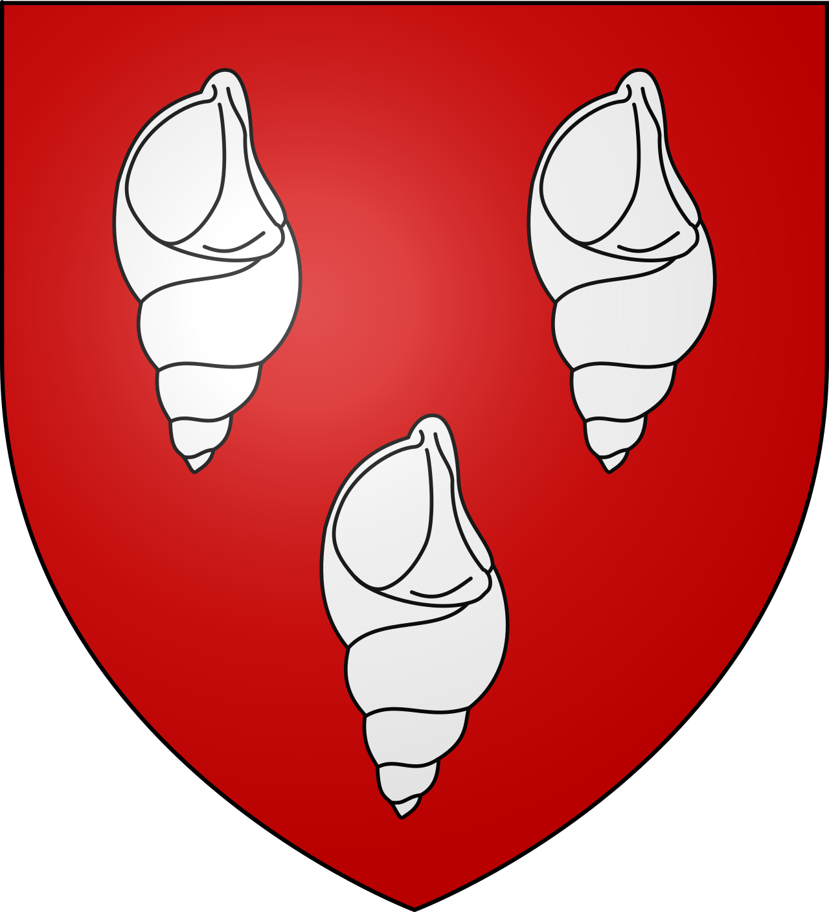
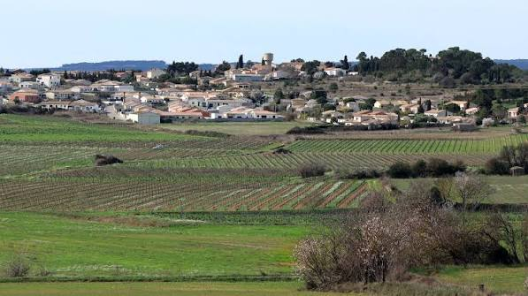

Conques-sur
OrbielVillage du Cabardès dans la vallée de l’Orbiel


⟹ Villes & Villages Emblématiques ⟸

Le territoire de Conques-sur-Orbiel est occupé depuis la Préhistoire. L’abri de Font-Juvénal a livré une exceptionnelle stratigraphie archéologique comprenant de nombreux niveaux d’occupation depuis le Néolithique ancien jusqu’à l’âge du Cuivre. Ces découvertes montrent que la vallée de l’Orbiel a constitué très tôt un espace favorable à l’installation humaine.
Le village n’apparaît clairement dans les sources écrites qu’au XIIe siècle, avec la mention de personnages portant le nom de Conques. Au XIIIe siècle, le castrum et la seigneurie sont tenus en fief dans un système de paréage associant le roi de France et l’abbaye de Lagrasse. Des travaux de fortification sont entrepris afin de protéger le bourg.

La fin du Moyen Âge est marquée par des épisodes de violence. Au XVe siècle, Conques est pillée et incendiée par les troupes de Rodrigue de Villandrando, l’un des chefs de bandes de mercenaires connus sous le nom d’« Écorcheurs ». Malgré ces destructions, le village se reconstruit et conserve une partie de son organisation défensive.
Aux XVIIe et XVIIIe siècles, Conques connaît une période de prospérité. Les moulins et surtout les manufactures de draps participent à l’économie du bassin carcassonnais, célèbre pour sa production textile. Des négociants et propriétaires enrichis font édifier ou transformer plusieurs demeures dans le village et les domaines environnants.
Au XIXe siècle, la viticulture se développe à son tour. Parallèlement, l’exploitation minière de la vallée de l’Orbiel et du secteur de Salsigne prend progressivement de l’importance. Aux XIXe et XXe siècles, les mines d’or et d’arsenic modifient profondément l’économie de toute la vallée, attirant une main-d’œuvre nouvelle et laissant un héritage industriel mais aussi environnemental durable.
Aujourd’hui, Conques-sur-Orbiel conserve un centre ancien avec vestiges de fortifications, ruelles médiévales, église Sainte-Foy et plusieurs édifices protégés. La commune se trouve à la rencontre de trois histoires : celle d’un habitat préhistorique exceptionnel, celle d’un bourg fortifié du Carcassès et celle d’une vallée profondément marquée par l’industrie minière et la viticulture.
L’abri de Font-Juvénal est essentiel pour comprendre les origines du peuplement. Sa succession de niveaux archéologiques permet de suivre sur une très longue durée les communautés néolithiques et chalcolithiques. Ce site replace Conques-sur-Orbiel dans une histoire humaine qui commence plusieurs millénaires avant la naissance du village médiéval.
Au XIIIe siècle, la seigneurie de Conques est organisée en paréage entre le roi de France et l’abbé de Lagrasse. Cette situation reflète la recomposition politique du Carcassès après la croisade contre les Albigeois. Les fortifications du bourg sont renforcées et structurent durablement son plan.
Les sceaux communaux médiévaux témoignent de l’existence d’une communauté organisée. Un sceau du début du XIVe siècle associe le nom des consuls à une représentation parlante de « conque ». Les armoiries ultérieures et leurs interprétations montrent la permanence de cette identité municipale.
Après les destructions du XVe siècle, les XVIIe et XVIIIe siècles apportent une prospérité liée notamment aux moulins et aux manufactures de draps. Conques participe à l’économie textile du bassin carcassonnais, alors réputé pour ses productions et ses réseaux de négociants.
Au XIXe siècle, les défrichements de garrigue favorisent l’extension de la vigne. L’épierrement des parcelles produit les matériaux utilisés pour les murets et les capitelles. Ces constructions de pierre sèche sont aujourd’hui des archives du paysage agricole et du travail des familles rurales.
L’industrialisation minière de la vallée de l’Orbiel, en particulier autour du bassin de Salsigne, bouleverse ensuite l’économie et la démographie. L’extraction de l’or et de l’arsenic crée des emplois mais laisse aussi un héritage environnemental durable, devenu une composante incontournable de l’histoire contemporaine de la vallée.